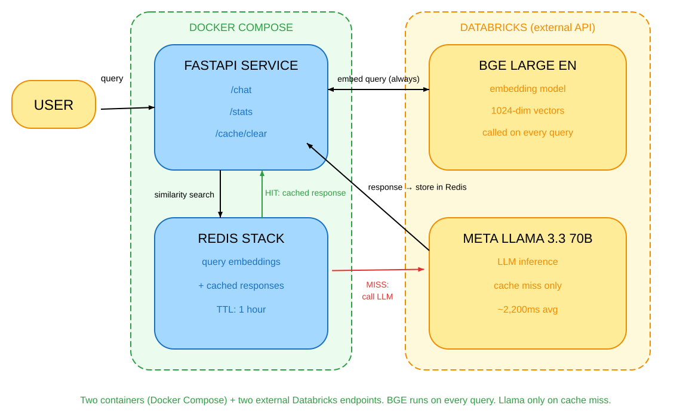
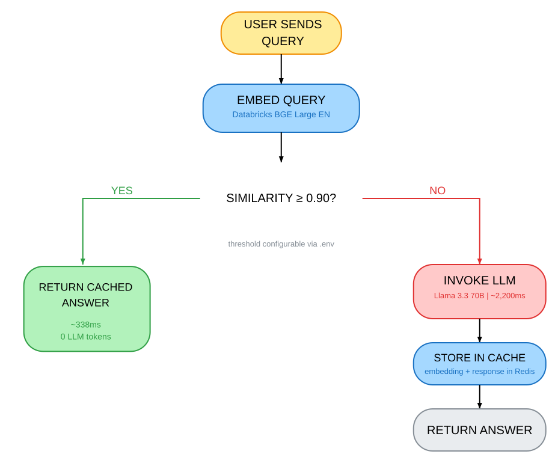

Alessandro Garavaglia | 9 min read | February 2026
Your LLM-powered application is bleeding money. Every time a user asks "How do I reset my password?" you pay for inference. When the next user asks "I forgot my password, how can I reset it?" you pay again. Same answer, same cost. Traditional caching will not help because the strings do not match.
As AI applications move from prototype to production, costs become real. At scale, similar queries can represent 30-40% of traffic. Users ask the same things in different ways, and exact-match caching cannot capture that.
Semantic caching can.
What is semantic caching?
Traditional caching works on exact matches. The key is the string, and two strings must be identical to produce a hit. That is fine for static content or deterministic API responses, but it breaks down for natural language.
Semantic caching works on meaning instead of text. You convert queries into vector embeddings, store them in a cache, and search by similarity when a new query comes in. If the new query is close enough in meaning to something already cached, you return the stored response without calling the LLM.
The difference looks like this:
Traditional cache:
"How do I reset my password?" → MISS (first time)
"How do I reset my password?" → HIT (exact match)
"I forgot my password, help!" → MISS (different string)
Semantic cache:
"How do I reset my password?" → MISS, embed + cache
"I forgot my password, help!" → HIT (similarity: 0.96)Three concepts make this work:
- Embeddings: Dense vector representations of text. A sentence like "I forgot my password" becomes a list of 1024 floats that encode its meaning. Similar sentences produce similar vectors.
- Cosine similarity: A score between 0 and 1 measuring how close two vectors are. A score of 1 means identical direction (semantically equivalent). A score near 0 means unrelated.
- Similarity threshold: The minimum score to count as a cache hit. Set it too low and you risk returning the wrong answer. Set it too high and you miss valid hits. A threshold of 0.90 is a reasonable starting point.
The insight is simple: if meaning determines the answer, then meaning should determine the cache key.
The architecture
The demo has four components working together:

FastAPI handles the HTTP layer and orchestrates the cache logic. It exposes three endpoints: /chat for queries, /stats to inspect cache performance, and /cache/clear to reset between tests.
Redis Stack stores the embeddings and responses. Each cache entry is two linked keys: one holding the query embedding (for similarity search), one holding the response text (retrieved on a hit). Both expire after a configurable TTL.
Databricks BGE Large EN generates the embeddings. This is the model that converts text to vectors. It runs as a Databricks Foundation Models endpoint, called via LangChain's DatabricksEmbeddings.
Databricks Meta Llama 3.3 70B Instruct generates responses on cache misses. Called via LangChain's ChatDatabricks, it only runs when no similar query is found in the cache.
Cache at the semantic boundary: embed queries, not responses. Store both, but search using vectors. This keeps similarity matching fast while preserving exact answers.
The whole system runs with docker compose up --build. Redis Stack is pulled from Docker Hub, and the FastAPI service builds from a local Dockerfile. You only need to set your Databricks host and token in a .env file.
Peeking into the code
The entry point
The /chat endpoint in main.py follows three steps: check the cache, return on a hit, or generate and store on a miss.
@app.post("/chat", response_model=ChatResponse)
async def chat(request: ChatRequest):
start_time = time.time()
# 1. Check cache for semantically similar query
cached_answer, similarity_score, is_hit = cache.get(request.question)
if is_hit:
# Fast path - return cached response
latency_ms = (time.time() - start_time) * 1000
return ChatResponse(
answer=cached_answer,
cached=True,
similarity_score=similarity_score,
latency_ms=latency_ms,
)
# 2. Cache miss - call LLM
answer = llm_client.generate_response(request.question)
# 3. Store in cache for future similar queries
cache.set(request.question, answer)
latency_ms = (time.time() - start_time) * 1000
return ChatResponse(answer=answer, cached=False, latency_ms=latency_ms)The cached flag and similarity_score in the response make it easy to understand what the cache did for each request. These also feed the /stats endpoint for monitoring.
Generating embeddings
Embeddings are the foundation of the whole system. The _get_embedding method in cache.py keeps this simple: delegate to the Databricks client via LangChain.
def _get_embedding(self, text: str) -> list[float]:
"""Generate embedding vector using Databricks BGE Large EN endpoint."""
return self.embeddings_client.embed_query(text)BGE Large EN produces 1024-dimensional vectors. What does that mean in practice? Each dimension captures some aspect of meaning. Similar sentences will have similar values across many dimensions, so their vectors point in the same direction in that 1024-dimensional space. Cosine similarity measures that direction.
Why cosine similarity instead of Euclidean distance? Because embedding vectors tend to cluster by meaning regardless of their magnitude. Two short sentences and two long sentences about the same topic will have similar directions, but potentially different magnitudes. Cosine similarity ignores magnitude and focuses on direction, which is exactly what we want here.
Similarity search
The _find_similar_query method scans all cached embeddings and returns the best match above the threshold:
def _find_similar_query(self, query_embedding):
best_match = None
best_score = 0.0
# Scan all cached query embeddings
for key in self.redis_client.scan_iter("cache:query:*"):
stored_data = self.redis_client.get(key)
if not stored_data:
continue
data = json.loads(stored_data)
stored_embedding = data["embedding"]
# Cosine similarity: measures angle between vectors
similarity = self._cosine_similarity(query_embedding, stored_embedding)
if similarity > best_score:
best_score = similarity
best_match = key.decode("utf-8")
# Only return a match if it clears the threshold
if best_score >= self.similarity_threshold:
return best_match, best_score
return None, NoneThe cosine similarity calculation itself is four lines:
def _cosine_similarity(self, vec1, vec2):
a, b = np.array(vec1), np.array(vec2)
dot_product = np.dot(a, b)
# Normalize by magnitudes to get angle-based score
return float(dot_product / (np.linalg.norm(a) * np.linalg.norm(b)))One thing worth noting: this demo uses linear search. It iterates through every cached embedding to find the best match. That is fine for hundreds of entries, but it does not scale beyond that. In production, Redis Stack includes a vector search module (RediSearch) that supports approximate nearest neighbor search with O(log n) complexity. The switch is mostly a configuration change to how entries are indexed, not a rewrite of the cache logic.
Linear search is honest. It finds the exact best match, which makes it ideal for a demo where you want to understand what the cache is actually doing.
Storing with TTL
On a cache miss, the response gets stored as two linked Redis keys:
def set(self, query: str, response: str) -> None:
timestamp = int(time.time() * 1000000) # Microsecond precision for unique keys
# Generate embedding for the query
query_embedding = self._get_embedding(query)
# Key 1: query embedding (for similarity search)
query_data = {"embedding": query_embedding, "query": query}
self.redis_client.setex(
f"cache:query:{timestamp}", self.ttl, json.dumps(query_data)
)
# Key 2: response text (retrieved on cache hit)
self.redis_client.setex(
f"cache:response:{timestamp}", self.ttl, response
)Two keys instead of one keeps concerns separated. During search, we only load embeddings. We only load the response text when we have a confirmed hit. This matters when you have many cached entries: you avoid deserializing response text for every comparison.
Both keys share the same timestamp and the same TTL, so they expire together. The TTL is configurable via the .env file and defaults to one hour.
The demo in action

The demo simulates a customer support chatbot for a fictional software company. The benchmark script runs 100 queries across 9 topic clusters (password reset, billing, CloudSync Pro, AnalyticsPro pricing, and so on). Each cluster contains semantic variations of the same question.
First query in a cluster:
A user asks "How do I reset my password?"
- Embed the query (~50ms via Databricks BGE Large EN)
- Search Redis: no similar queries found
- Call Databricks Meta Llama 3.3 70B (~2,200ms)
- Cache the embedding + response with 1-hour TTL
Total: ~2,250ms. Full cost.
Similar query five minutes later:
Another user asks "I forgot my password, help!"
- Embed the query (~50ms)
- Search Redis: finds "How do I reset my password?" with similarity 0.96
- Return cached response immediately
- No LLM call
Total: ~338ms. No tokens spent on the LLM.
Benchmark results across 100 queries (threshold 0.90, BGE Large EN, Meta Llama 3.3 70B):
Cache Performance:
Cache hits: 43 / 100 (43.0% hit rate)
Cache misses: 57 / 100
Token Savings:
Metric No Cache With Cache Saved
---------------------------------------------------
Prompt tokens 9,121 5,192 3,929
Completion tokens 9,508 5,342 4,166
Total tokens 18,629 10,534 8,095 (-43.5%)
Latency:
Without cache (avg): 1,510ms
Cache hit (avg): 338ms (4.5x faster)
Cache miss (avg): 2,197ms
Overall improvement: 7.5%The 7.5% overall improvement might look modest, but that is the average across all requests including cache misses. For the 43% of requests that hit the cache, the improvement is 4.5x. At scale, that is substantial.
A 43% cache hit rate means nearly half your LLM calls disappear. The cost savings scale linearly with traffic.
A few example hits from the benchmark:
- "Tell me about CloudSync Pro" → "What is CloudSync Pro?" (similarity: 0.957)
- "How expensive is AnalyticsPro?" → "How much does AnalyticsPro cost?" (similarity: 0.984)
- "CloudSync sync problems" → "CloudSync not syncing files" (similarity: 0.910)
These are real semantic matches, not paraphrases. The embedding model catches that "expensive" and "how much does it cost" mean the same thing in context.
Remarks
This demo makes several deliberate simplifications. Here is what you would want to change before putting this in production.
Linear search does not scale. Once you have more than a few hundred cached entries, scanning every embedding becomes slow. Switch to Redis vector search (RediSearch module in Redis Stack) which supports HNSW indexing for approximate nearest neighbor at O(log n). The index configuration takes about 20 lines of setup code.
TTL-only invalidation. Cache entries expire after a fixed time, but there is no event-driven invalidation. If your underlying data changes (new pricing, updated product names), old cached responses will be served until TTL expiry. For rapidly changing data, you need shorter TTLs or manual cache clearing on data updates.
On threshold tuning: the 0.90 default is a starting point. Tighter domains with more specific vocabulary can go lower (0.85-0.88). Mission-critical support where wrong answers have consequences should go higher (0.95-0.97). The right approach is to log similarity scores for all hits and misses over time, then adjust based on observed false positives.
When semantic caching hurts: not every query type benefits. User-specific queries ("What is my account balance?") cannot be cached across users. Questions that look similar but need different answers ("How do I cancel?" vs "How do I pause my subscription?") can produce false hits at looser thresholds. And rapidly changing data (live prices, real-time status) makes TTL-based caching unreliable regardless of similarity.
The question is not whether to cache, but which queries are stable enough to cache safely.
Closing thoughts
Semantic caching is one of those optimizations that looks obvious in hindsight. Of course users ask the same questions in different ways. Of course you should not pay for inference twice. But it requires a few pieces to come together: a vector embedding model, a cache that can store and search vectors, and a similarity threshold tuned to your domain.
The demo shows a 43% hit rate on a synthetic query set. Real production traffic will vary. You can find a working demo (including a benchmarking script) in my Github repository:
https://github.com/agaravaglia/semantic-cache-redis-demo
This post is not meant to provide definitive answers or prescriptive guidance. Its goal is to spark reflections and discussions on the topic.
The views expressed are my own.